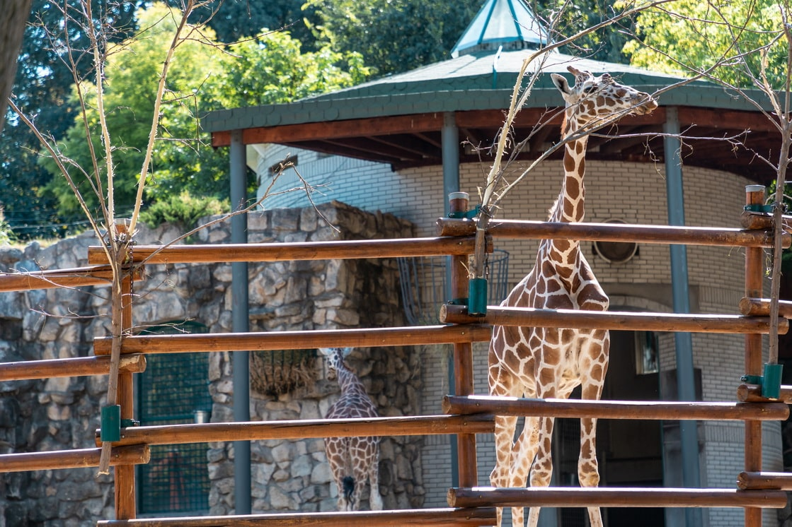

Životinja: Zebra
Naučno ime: Hippotigris
Životni vek: 28 - 30 godina
Visina: 150 cm
Porodica: Konji
Masa: 300 kg
Zebra je naziv za nekoliko vrsta životinja koje pripadaju porodici
Equidae (porodici konja) i koje žive u centralnoj i južnoj Africi.
Odrasle zebre teže do 300 kg i uglavnom se nalaze u stepama i retkim
šumama. Divlja zebra je visine leđa oko metar i dvadeset pet, ponekad
i do metar i po, a dugačka gotovo dva metra. Dlaka je išarana
crno-belim poprečnim prugama. Jedna porodica se obično sastoji od
pastuva, nekoliko kobila i njihovih ždrebadi. Ženke imaju trudnoću od
otprilike 12 meseci i daju obično samo jedno ždrebe, obično u toku
kišne sezone. Mladunče je svetlije nego odrasle životinje i pruge su
mu tamnosmeđe i bele. Zebru love lavovi i pegava hijena.

Kopitari

Životinja: Žirafa
Naučno ime: Giraffa camelopardalis
Životni vek: 20 – 25 godina
Visina: 5.5 m
Porodica: Giraffidae
Masa: 2000 kg
Žirafa je afrički sisar iz reda papkara, najviši od svih kopnenih životinja. Mužjaci mogu biti visoki od 4.5 do 5.5 metara i težiti do 1,360 kilograma. Bremenitost kod žirafe traje između 14 i 15 meseci, posle čega se rađa jedno mladunče. Novorođena žirafa je otprilike 1.8 m visoka. Rekordna težina jednog mužjaka je iznosila približno 2,000 kg, a visina 6 m. Generalno, mužjaci su krupniji od ženki, koje su od mužjaka niže 70–100 cm. Oba pola imaju rogove, mada su rogovi kod ženki manji. Žirafe poseduju tačke koje prekrivaju celo telo, osim donje delove njihovih stomaka. Ne postoje dve žirafe sa istim rasporedom šara na telu. Vrat može da dostigne i dva metra. Žirafe veoma brzo trče - u galopu dostižu brzinu i do 60 km/h. Žirafa se hrani lišćem i granjem drveta mimoze i akacije. Ona može da pojede 63 kg lišća i grančica i popije oko 30 litara vode dnevno Životni vek žirafa je između 20 i 25 godina u divljini, a 28 godina u zatočeništvu.
Naučno ime: Giraffa camelopardalis
Životni vek: 20 – 25 godina
Visina: 5.5 m
Porodica: Giraffidae
Masa: 2000 kg
Žirafa je afrički sisar iz reda papkara, najviši od svih kopnenih životinja. Mužjaci mogu biti visoki od 4.5 do 5.5 metara i težiti do 1,360 kilograma. Bremenitost kod žirafe traje između 14 i 15 meseci, posle čega se rađa jedno mladunče. Novorođena žirafa je otprilike 1.8 m visoka. Rekordna težina jednog mužjaka je iznosila približno 2,000 kg, a visina 6 m. Generalno, mužjaci su krupniji od ženki, koje su od mužjaka niže 70–100 cm. Oba pola imaju rogove, mada su rogovi kod ženki manji. Žirafe poseduju tačke koje prekrivaju celo telo, osim donje delove njihovih stomaka. Ne postoje dve žirafe sa istim rasporedom šara na telu. Vrat može da dostigne i dva metra. Žirafe veoma brzo trče - u galopu dostižu brzinu i do 60 km/h. Žirafa se hrani lišćem i granjem drveta mimoze i akacije. Ona može da pojede 63 kg lišća i grančica i popije oko 30 litara vode dnevno Životni vek žirafa je između 20 i 25 godina u divljini, a 28 godina u zatočeništvu.

Životinja: Lama
Naučno ime: Lama glama
Životni vek: 15 – 25 godina
Visina: 180 cm
Porodica: Kamila
Masa: 130 – 200 kg
Lame potiču iz Severne Amerika od pre oko 40 miliona godina. One su prešle u Južnu AMeriku, da bi krajem ledenog doba njihovi preci u Severnoj Americi izumrli. Lame su srodnici kamila. Postoje četiri vrste lama - gvanako, alpaka, lama i vikunja. Lame u prirodi žive na visoravnima visino do 4.500 metara. Odrasla lama može dostići visinu od 1.7 do 1.8 m. Obično žive 15 do 25 godina, a neke jedinke prežive 30 i više godina. Uši su im obično dugačke i blago zakrivljene prema unutra, karakteristično poznate kao "banana". Nemaju leđne grbe, a stopala su uska, sa nožnim prstima razdvojenim više nego kod kamila. Imaju kratak rep i dugu, vunastu i mekanu dlaku.
Naučno ime: Lama glama
Životni vek: 15 – 25 godina
Visina: 180 cm
Porodica: Kamila
Masa: 130 – 200 kg
Lame potiču iz Severne Amerika od pre oko 40 miliona godina. One su prešle u Južnu AMeriku, da bi krajem ledenog doba njihovi preci u Severnoj Americi izumrli. Lame su srodnici kamila. Postoje četiri vrste lama - gvanako, alpaka, lama i vikunja. Lame u prirodi žive na visoravnima visino do 4.500 metara. Odrasla lama može dostići visinu od 1.7 do 1.8 m. Obično žive 15 do 25 godina, a neke jedinke prežive 30 i više godina. Uši su im obično dugačke i blago zakrivljene prema unutra, karakteristično poznate kao "banana". Nemaju leđne grbe, a stopala su uska, sa nožnim prstima razdvojenim više nego kod kamila. Imaju kratak rep i dugu, vunastu i mekanu dlaku.